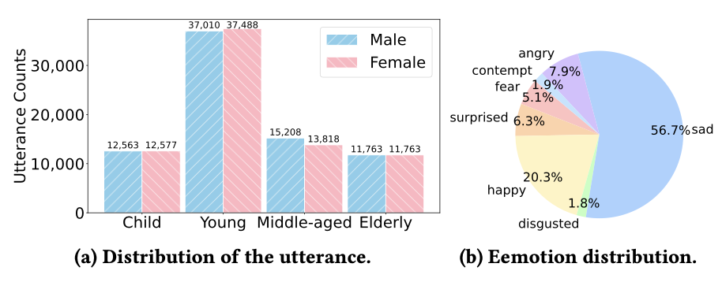
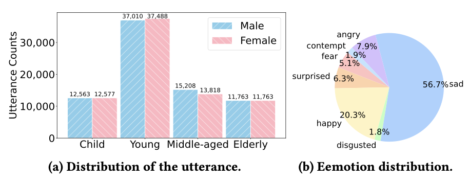

1. Task Definition
Given a multimodal dialogue Ď = (Qi | D<i), where Qi denotes the current i-th round multimodal user query input, and D<i represents the dialogue history, MERG task is to produce a contextually appropriate and empathetic multimodal response Ri for Qi, with each utterance (i.e., Qi and Ri) consisting of three content-synchronized modalities: text ti, speech audio si, and talking-face video vi, i.e., Qi/Ri = (tq/ri, sq/ri, vq/ri). This results in Di = {(Q1, R1), ..., (Qi, Ri)}, a total of i round of a multimodal dialogue, includes the user query Qi and model response Ri. The task requires maintaining coherence and emotional congruence across these modalities to ensure that the generated response Ri well aligns with the emotional cues in user input and also context.
2. AvaMERG: A Avatar-based Multimodal Empathetic Response Generation Dataset
We introduce AvaMERG, a large-scale high-quality benchmark dataset for MERG, which extends traditional text-based ERG by integrating authentic human speech audio and dynamic talking-face avatar videos.
 

3. Empatheia: MLLM for MERG
we present Empatheia, a benchmark system tailored for MERG. Based on a backbone LLM as the core reasoner, Empatheia leverages a multimodal encoder, speech generator, and talking-face avatar generator, forming an end-to-end system.
3.1 Chain-of-Empathy Reasoning
Inspired by Chain-of-Thought, we design a Chain-of-Empathy (CoE) reasoning mechanism. Specifically, we guide the LLM to think through the following progressive steps to gradually derive the final empathetic responses more accurately and more interpretably.
3.2 Content Synchronizer and Style Disentangle modules
To ensure high-quality multimodal generation, we integrate the state-of-the-art StyleTTS2 and DreamTalk generators, addressing content synchronization and stylistic coherence through two modules—content synchronizer and style disentangler—before the generators, to maintain consistency in both content and style across modalities.dually derive the final empathetic responses more accurately and more interpretably.
3.3 Empathetic-enhanced Training Strategy
With the above Empatheia model architecture, we now empower it with effective MERG capability via a series of training strategies.